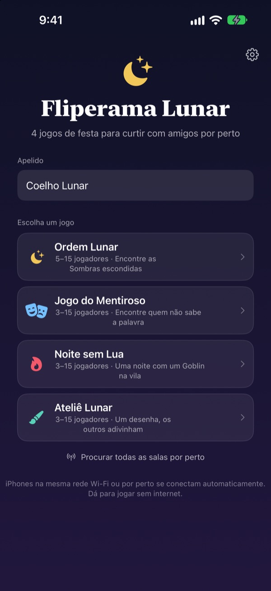
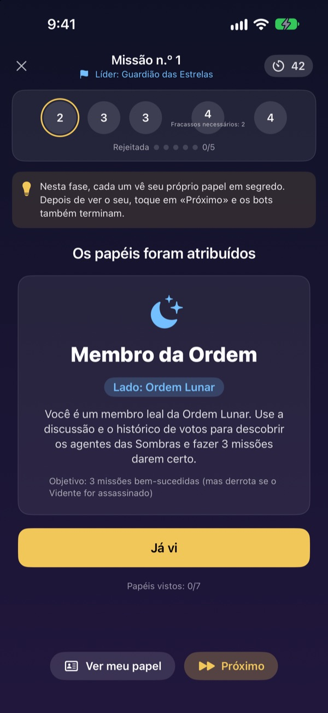
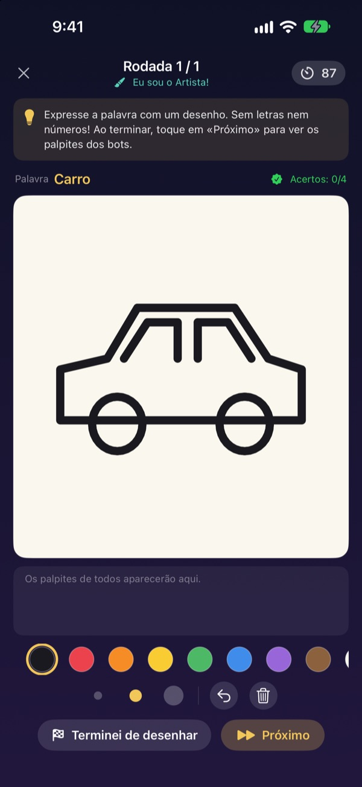
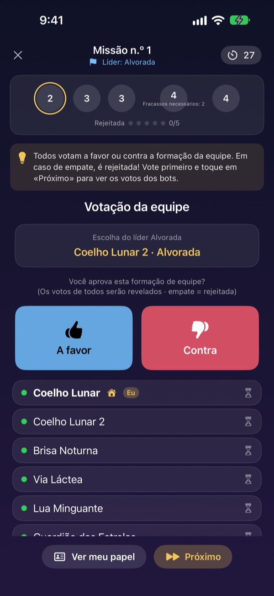

Galera reunida?
Peguem os iPhones.
Uma pessoa cria uma sala e quem está por perto entra em segundos. Papéis e palavras secretas aparecem só na tela de cada um: sem cartas e sem ninguém preso na função de narrador.
Todos os jogos são grátis. Sem conta e sem internet.

Jogue uma rodada do Jogo do Mentiroso
Imagine cinco iPhones na mesa e toque em um por vez para espiar. Só um não sabe a palavra. Dá para ir passando a tela entre amigos também.
Todo mundo junto e ninguém sabe o que jogar
Noite de jogos, fim de semana na chácara, Natal com a família. Para um jogo de papéis secretos alguém precisa ficar de fora narrando, e papelzinho dobrado nunca é tão secreto assim. Numa casa com Wi-Fi fraco, jogo online também não rola. No Fliperama Lunar, os iPhones narram, distribuem os papéis e se conectam sozinhos.
Seu papel fica só na sua tela
Quando o jogo começa, cada iPhone recebe o próprio papel ou palavra. Nada de distribuir cartas ou de “todo mundo fecha os olhos”.
Na votação, só dá para ver quem já votou. Em quem cada um votou fica em segredo até a revelação.

Quatro jogos para qualquer turma
No Jogo do Mentiroso vence quem tem lábia, na Ordem Lunar vocês caçam as Sombras com missões e votações, na Noite sem Lua procuram o Goblin em uma só noite e no Ateliê Lunar um desenha e os outros adivinham.
Ordem Lunar a partir de 5 pessoas, os outros a partir de 3, todos até 15.

Jogo novo? Aprende em minutos
Cada jogo tem o modo Como jogar, em que você joga uma rodada com bots, passo a passo. Leia a dica no topo e toque em Próximo.
Se o app fechar ou a conexão cair, toque em Continuar na tela inicial e volte para a mesma rodada.

Comece em três passos
- 1
Apelido e jogo
Todo mundo abre o app, digita um apelido e escolhe o jogo.
- 2
Criar ou entrar numa sala
Uma pessoa cria a sala; os outros a encontram em Procurar salas por perto.
- 3
O anfitrião começa
Com todo mundo dentro, o anfitrião toca em Iniciar partida. O app cuida do resto.
Os quatro jogos
- Jogo do Mentiroso · 3 a 15
- Todos recebem a mesma palavra, menos um. Cada um descreve na sua vez e depois votam no Mentiroso. Se for pego mas acertar a palavra, o Mentiroso vence mesmo assim.
- Ordem Lunar · 5 a 15
- Descubram as Sombras escondidas na Ordem. O líder escolhe uma equipe, todos votam a favor ou contra e a equipe joga em segredo sucesso ou fracasso. Vence o lado que levar três missões primeiro.
- Noite sem Lua · 3 a 15
- Uma noite só, e um Goblin escondido na vila. À noite, Xamã, Ladrão noturno e Brincalhão agem em segredo. Ao amanhecer tem discussão e uma única votação para achar o Goblin.
- Ateliê Lunar · 3 a 15
- Um desenha a palavra e os outros adivinham no chat. Quanto mais rápido acertar, mais pontos, e quem desenha ganha a cada acerto.
Qualquer jogo pode ser testado antes, sozinho, com bots no modo Como jogar.
Perguntas frequentes
Não estou vendo a sala.
Confira se o anfitrião e os jogadores estão no mesmo Wi-Fi ou perto uns dos outros. O Fliperama Lunar precisa estar ativado em Ajustes ▸ Privacidade e Segurança ▸ Rede Local para encontrar aparelhos por perto. Com Wi-Fi e Bluetooth ligados, a conexão fica mais estável.
Preciso permitir o acesso à rede local?
Sim, é assim que o app encontra os iPhones por perto e se conecta a eles. Se você tocou em Não Permitir, ative de novo em Ajustes ▸ Privacidade e Segurança ▸ Rede Local.
Caí no meio da partida.
Abra o app de novo e toque em Continuar na tela inicial para voltar à mesma sala e rodada. Seu papel e sua pontuação continuam lá. Se demorar para reconectar, entre de novo pela lista de salas.
Alguém parou de responder e o jogo travou.
O anfitrião pode remover quem não responde a qualquer momento, e o jogo recalcula com quem ficou e segue. O modo anfitrião GM também consegue pular uma etapa travada.
Quantas pessoas precisa?
A Ordem Lunar precisa de 5. Jogo do Mentiroso, Noite sem Lua e Ateliê Lunar começam com 3. Todos vão até 15. Faltou gente? Aprendam as regras com bots no modo Como jogar.
Precisa de internet ou de conta?
Não. Sem cadastro, sem login e sem internet. Os iPhones próximos se conectam direto, e os dados do jogo nunca são enviados para um servidor.
Dá para testar um jogo sozinho antes?
Dá. Escolha um jogo e depois Como jogar (prática com bots). Os bots entram na sala e você joga uma rodada inteira, passo a passo.
Como relato um erro ou mando uma ideia?
Pelo próprio app, em Ajustes (a engrenagem) ▸ Suporte, ou por e-mail para o endereço abaixo. Respondemos o mais rápido possível.
Erros, ideias ou qualquer outra coisa: escreva para mizzking75@gmail.com.